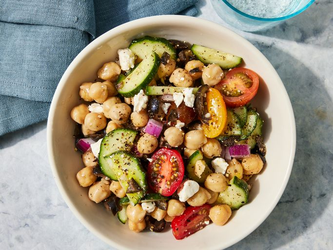

Bean Salad

Photo credit: Dotdash Meredith Food Studios
Description
This is a tasty and healthy salad that works well as a standalone lunch or an appetizer for a party. It packs a healthy punch but still manages to be delicious. You'll be making this one again without a doubt.
Ingredients
- 2 (15 ounce) cans garbanzo beans, drained
- 2 cucumbers, halved lengthwise and sliced
- 1 (15 ounce) can black olives, drained and chopped
- 12 cherry tomatoes, halved
- ½ red onion, chopped
- ½ cup Italian-style salad dressing
- 2 cloves garlic, minced
- ½ lemon, juiced
- 1 ounce crumbled feta cheese
- ½ teaspoon garlic salt
- ½ teaspoon ground black pepper
Steps
- Get all your ingredients together
- Put the following together in a big bowl: beans, cucumbers, olives, tomatoes, red onion, salad dressing, garlic, lemon juice, feta cheese, garlic salt, and pepper
- Toss together until it is all mixed up. Put in refrigerator for 2 hours before serving. Eat it cold.
Home